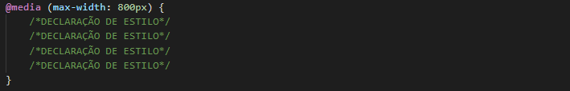

O são media queries
Um media query consiste em uma folha de estilo alternativa, a qual deve conter no mínimo uma expressão de estilização, essas são usadas para adaptar o conteúdo de um site para quaisquer tamanhos de telas em diferentes dispositivos sem alterar o mesmo (conteúdo).
Facilitando o entendimento
Em outras palavras, um media query assume estilos alternativos para um mesmo conteúdo, tal estilo só é aplicado sob a condição de um tamanho especifico de tela chamadas media features, ou seja, imagine que você crie um media query com condição de largura máxima de 800 pixels, com isso, os estilos declarados nessa media query só vão ser aplicados em dispositivos com telas de 800 pixels ou menos de largura.
Sintaxe
A sintaxe para a criação de um media query é simples e pode ser criado no mesmo arquivo do estilo principal ou em um arquivo separado, mas em ambos os casos um media query é indicado da seguinte forma, usando largura máxima de exemplo:
Outras informações
Por fim, é possível criar media queries com condições de aplicação mais complexas utilizando operadores lógicos:
- O operador and combina múltiplas condições em uma mesma media query.
- O operador not é usado para negar uma media query por completo.
- Também é possível combinar múltiplas queries em uma lista separadas por vírgula, equivalente ao operador or, ou seja, se uma das queries for verdadeira, todas são.